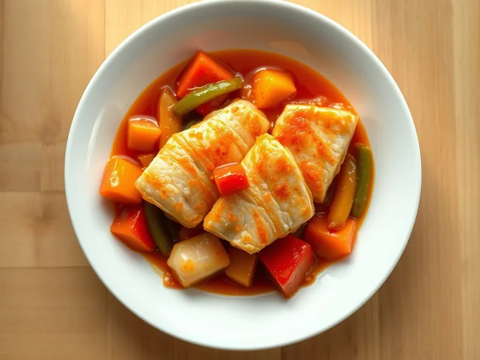

Фото: Иллюстрация ИИ, Cloudflare Workers AI
Рыба в кисло-сладком соусе по-китайски
Кусочки минтая в крахмальной корочке с перцем в кисло-сладком соусе
30 мин3 порц.381 ккал на порциюБ 29 · Ж 15 · У 34Азиатская кухня
Продукты на 3 порц.
- Минтай500 г
- Крахмал2 ст. л.
- Перец болгарский1 шт
- Лук репчатый1 шт
- Кетчуп3 ст. л.
- Сахар1 ст. л.
- Уксус 9%1 ст. л.
- Соевый соус1 ст. л.
- Вода80 мл
- Растительное масло3 ст. л.
- Чеснок1 зуб.
Как готовить
- Смешайте кетчуп, сахар, уксус, соевый соус и воду для соуса.
- Нарежьте минтай кубиками 3 см, обваляйте в крахмале.
- Обжарьте рыбу в большей части масла на среднем огне по 2 минуты с каждой стороны до хрустящей светлой корочки и выложите на тарелку.
- В оставшемся масле обжарьте нарезанные лук, перец и чеснок на сильном огне 3 минуты, чтобы овощи остались хрустящими.
- Влейте соус и варите 1-2 минуты до загустения, затем верните рыбу и перемешайте, чтобы покрыть её соусом.
Совет. Возвращайте рыбу в соус в самом конце, иначе корочка размокнет. Подайте с рисом.